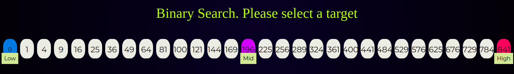
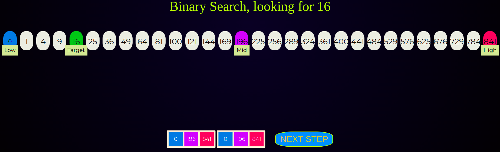
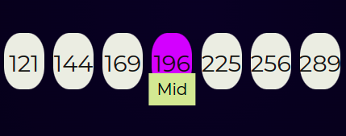
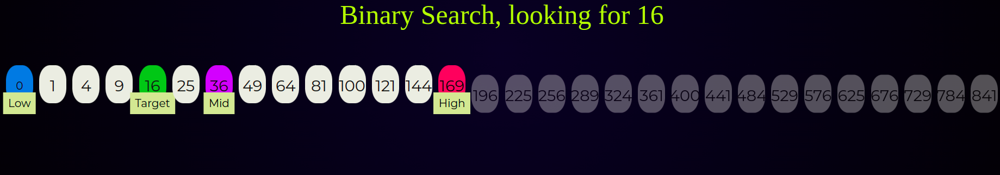
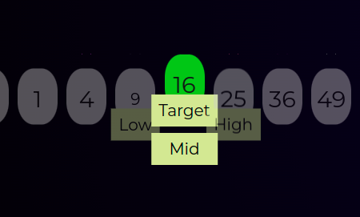

"The array in which searching is to be performed is :

INITIAL ARRAY BLOCKS IN SIMULATOR
"Let" TARGET = 16
"be the element to be searched."
Set two pointers low and high at the lowest and the highest positions respectively.

TWO POINTERS LOW and HIGH
Calculate the MID = (HIGH+LOW) / 2
or
MID = LOW + ( HIGH - LOW ) / 2 .
or
you can use " >> " operator for fast divison operation
Now,we got
arr[MID] = 196

MID ELEMENT
"If TARGET == MID, then return MID . Else, compare the element to be searched with MID. "
TARGET SELECTED TO SEARCH
"If"
TARGET > MID
", compare "
TARGET
" with the middle element of the elements on the right side of "
MID
This is done by setting "
LOW
to
LOW = MID + 1
Else, compare
TARGET
with the middle element of the elements on the left side of
HIGH
. This is done by setting
HIGH
to
HIGH = MID -1

AFTER COMPARISON
Repeat steps 3 to 6 until LOW meets HIGH and we FOUND our TARGET

LOW == HIGH and MID == TARGET !! found